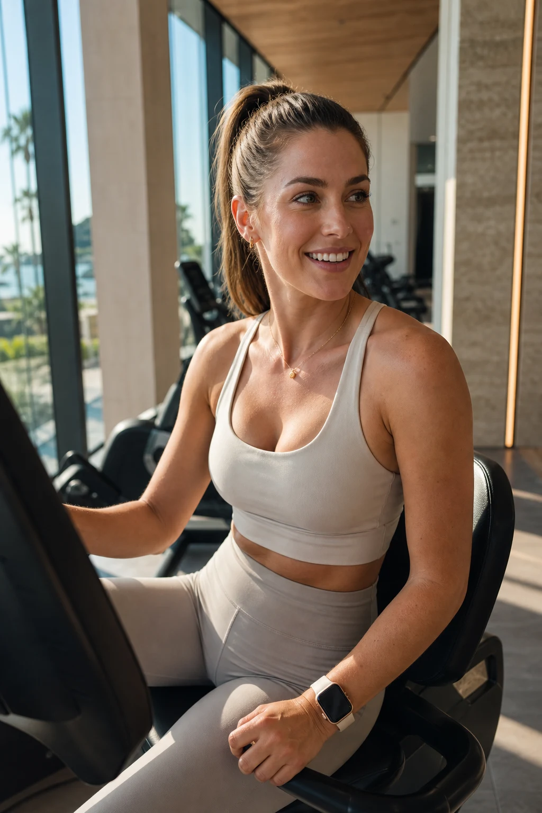

Phone-safe preview: this page only embeds portable hosted files. Temporary ElevenLabs blob previews are hidden until captured.
Character References
REF — Character A (Brunette)
preview availablecWW6F8fmpg9aFwxcqB7V

REF — Character A (Brunette) / Seedream 4.5 / Photorealistic portrait reference sheet of a 25-year-old brunette woman with a sleek high ponytail, athletic toned build, glowing healthy skin, wearing premium luxury activewear in warm neutral tones. Seated on a premium recumbent fitness bike in a luxury Newport Beach fitness club — floor-to-ceiling windows with warm California morning sunlight streaming in, architectural wood panel details, natural stone finishes behind her. Medium close-up from chest up, face angled slightly three-quarter toward camera, mouth fully unobstructed, eyes fully visible, no sunglasses, hair away from lips. Warm directional golden morning window light. Shot on Phase One IQ4, 85mm portrait lens, natural skin texture, subtle film grain. No other people in frame. Photorealistic, crisp, editorial fitness brand aesthetic. / Run / Seedream 4.5 / 9:16 / 2K
REF — Character B (Blonde) / Seedream 4.5 / Photorealistic portrait reference of a 27-year-old woman with long blonde beach-wave hair, athletic and feminine build, glowing healthy skin, wearing premium luxury activewear in soft coastal neutral tones. Seated on a premium recumbent fitness bike in a luxury Newport Beach fitness club — floor-to-ceiling windows with warm California morning sunlight, architectural wood panel details, natural stone finishes behind her. Medium close-up from chest up, face angled slightly three-quarter toward camera, mouth fully unobstructed, eyes fully visible, no sunglasses, hair tucked behind shoulders away from lips. Warm directional golden morning window light. Shot on Phase One IQ4, 85mm portrait lens, natural skin texture, subtle film grain. No other people in frame. Photorealistic, crisp, editorial fitness brand aesthetic. / Run / Seedream 4.5 / 9:16 / 2K
No portable preview media found for this node yet.
REF — Gym Environment / Seedream 4.5 / Your generation will appear here / Luxury Equinox-inspired Newport Beach wellness fitness club interior. Floor-to-ceiling windows with warm California morning sunlight flooding in, casting long golden shafts of light across the space. Architectural wood panel walls, natural stone flooring and accents, premium recumbent fitness bikes positioned side-by-side in foreground. Immaculate, minimalist, affluent coastal wellness aesthetic. No people, no signage. Shot on Phase One IQ4, wide 24mm lens, warm 5500K morning light, crisp architectural photography. / Run / Seedream 4.5 / 9:16 / 2K
END CARD — Meal Prep Revolution / Seedream 4.5 / Luxury food photography end card. Premium chef-prepared meal containers arranged elegantly on a white marble surface with fresh whole ingredients scattered naturally — vibrant herbs, colorful vegetables, lean proteins. Clean modern packaging with minimalist branding. Warm soft studio light from above, subtle shadows. Crisp commercial food photography, Phase One IQ4, 85mm macro, shallow depth of field. Text overlay in clean bold white sans-serif typeface, centered bottom third: line 1 large "MEAL PREP REVOLUTION", line 2 medium "Fresh Meals. Pickup or Delivery.", line 3 medium "Order Today.", line 4 small "MealPrepRevolution.com". All text rendered exactly and legibly. Premium, editorial, aspirational. / Run / Seedream 4.5 / 9:16 / 2K
END CARD — Animated Hold / Kling 3.0 / Completely static hold. No camera movement. The premium meal prep product photography end card holds perfectly still for the full duration. Text remains crisp and legible throughout. / Run / Kling 3.0 / Start frame / 1080p / 3s
not generatednode_91cc6ca9-e80b-4801-bd94-c0e0a4193860
No portable preview media found for this node yet.
Image / GPT Image 2 / Your generation will appear here / REF — Luxury Newport Beach Fitness Club. Photorealistic environment reference image for a premium commercial. Luxury Equinox-inspired Newport Beach wellness club interior with floor-to-ceiling windows, warm California morning sunlight, architectural wood details, natural stone finishes, premium sleek recumbent bikes fixed side-by-side, clean affluent coastal California wellness aesthetic, polished but authentic. No people, no background pedestrians, no floating objects, no distorted equipment, no brand logos. Stable layout reference for all scenes. / Run / GPT Image 2 / 16:9 / 1K / Medium
No portable preview media found for this node yet.
S4 TTS — Char B — "Yep. I pick my meals..." / Eleven v3 / Your audio will appear here / Anya - Casual and friendly / Yep. I pick my meals in a couple taps. / Run / Eleven v3
S5 TTS — Char B — "They cook everything..." / Eleven v3 / 0:03 / Anya - Casual and friendly / They cook everything, and I choose pickup or delivery. / Run / Eleven v3
S7 TTS — Char B — "It is. My family loves it..." / Eleven v3 / 0:03 / Anya - Casual and friendly / It is. My family loves it, and I got my weekends back. / Run / Eleven v3
S9 TTS — Char B — "Go to MealPrepRevolution.com..."
preview availablezDdj6fCfTenBfJ0kFbyW
S9 TTS — Char B — "Go to MealPrepRevolution.com..." / Eleven v3 / 0:04 / Anya - Casual and friendly / Go to MealPrepRevolution dot com and order today. / Run / Eleven v3
S2 — CAM B — "Honestly? Meal Prep Revolution." / OmniHuman 1.5 / Relaxed, confident, warm delivery with a natural smile. Calm head nod, genuine and trustworthy energy, like sharing a secret with a close friend. / Run / OmniHuman 1.5 / 720p
S4 — CAM B — "Yep. I pick my meals..." / OmniHuman 1.5 / Your generation will appear here / Warm, organized, matter-of-fact delivery. Confident nod, natural smile, relaxed and conversational energy. / Run / OmniHuman 1.5 / 720p
S8 — CAM A — "Okay, I need that today." / OmniHuman 1.5 / Decisive, excited, fully convinced. Bright eager delivery, natural head nod, energized and ready. / Run / OmniHuman 1.5 / 720p